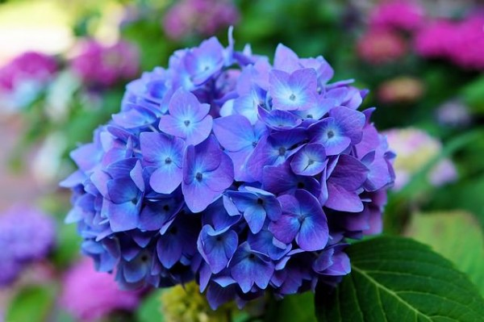

El Kalanchoe blossfeldiana es una de las plantas ornamentales más populares dentro de su género. Normalmente es comercializada como una pequeña planta de interior, ya que comúnmente se cultivada en jardines en zonas de clima cálido, ya que no soporta temperaturas por debajo de los 10 °C. Se puede forzar el periodo natural de floración cubriendo la planta para que tenga menos horas de luz al día.
Schizophragma hydrangeoides, conocida comnmente como Hortensia género Hydrangea, incluye plantas ornamentales, nativas del sur y el este de Asia2 (concretamente de China, Japón, Corea, el Himalaya e Indonesia) y de América. Pueden ser de hoja caduca o de hoja perenne, no obstante las más ampliamente cultivadas, que son especies de climas templados, son de hoja caduca.